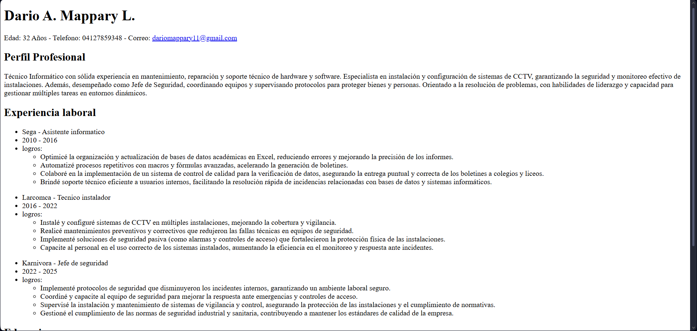
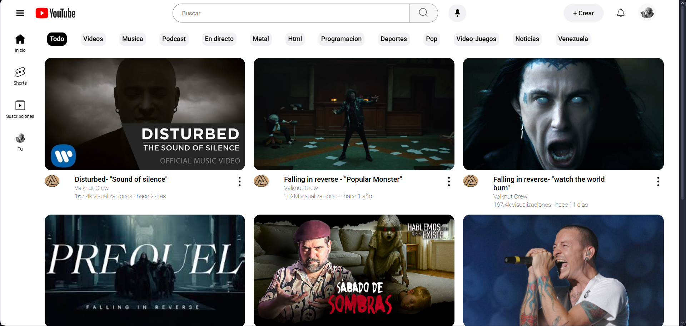
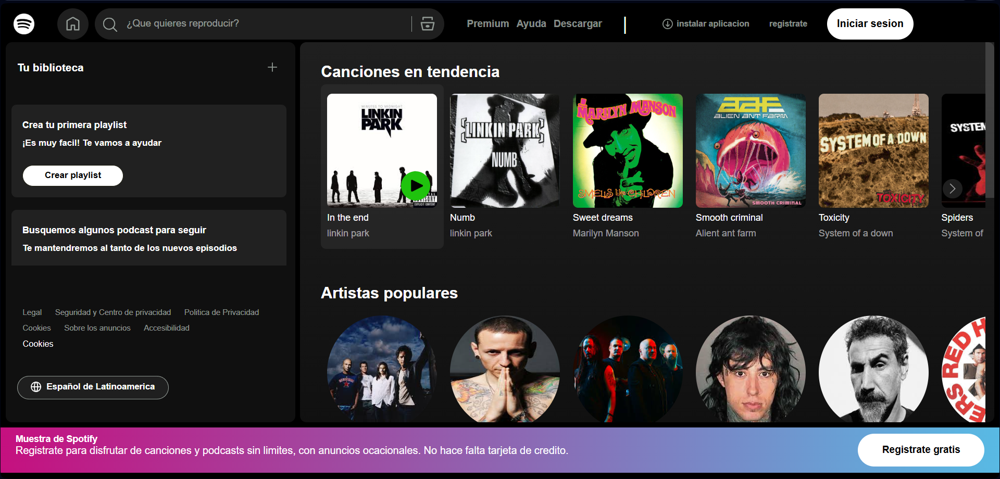

It's great to see you here! I'm Darío Mappary.
Full Stack Developer. I make sure everything works perfectly, transforming ideas into functional and scalable web products. Ensuring every piece works to perfection!
About me
"Full-Stack Developer in Growth: Logic and Quality in Code." "As a Full-Stack Developer in training, my driving force is a passion for new technologies and logical problem-solving. My technical foundation is solid in HTML, CSS, Sass, and Tailwind CSS, allowing me to build functional and aesthetic interfaces with great precision. My goal is clear: to create web solutions and apps that drive markets and businesses. My work approach is methodical, fast, and adaptable, always prioritizing code quality and scalability. I bring value to the team thanks to my autonomy, self-management, and aptitude for mentorship and communication. If you are looking for someone proactive with a strong foundation ready to evolve within your team, I would be delighted to collaborate on your next project."
My projects


